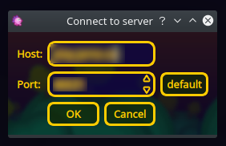

To set your in-game name, click on the wrench icon at the bottom-right. You can set your name under the Network tab. A password is not necessary.
Go back to the main menu by clicking on the red arrow at the bottom left of the screen and click the globe on the right and choose "Play local network game". A new screen will open up.
At the bottom, there is a button called "Specify addres". Fill in {{ site.content.domain_name }} for the host and leave the port number at 46631.
You should now see a list of rooms. There should be one room you can join.